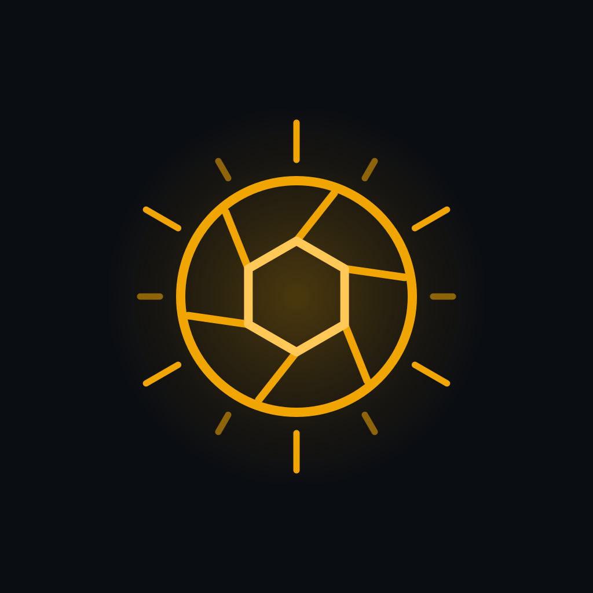

Light that actually matters
Golden hour, blue hour, and astronomical darkness are calculated from the real sun position at your exact coordinates — not a fixed offset from sunset.
Open Skies scores every hour from 0 to 100 for the kind of photography you actually do — factoring in cloud cover, wind, precipitation, visibility, humidity, sun angle, and the moon.
Free on the App Store · iPhone · Requires iOS 15.1 or later
Each mode weighs conditions differently — heavy overcast is a softbox for portraits but flat for landscapes, and dead-calm air is everything for macro.
A forecast built around light, not just temperature.
Golden hour, blue hour, and astronomical darkness are calculated from the real sun position at your exact coordinates — not a fixed offset from sunset.
Open Skies models the moon the way astrophotographers actually think about it: not just the phase, but the moon's altitude in the sky.
A bright moon overhead floods the whole sky; the same moon near the horizon barely dims the stars while gently lighting your foreground. A moon below the horizon means the darkest possible sky.
Best Conditions Nearby scans a 50-mile radius for the clearest skies in the next few hours. Locations maps photogenic spots within 10 miles — viewpoints, parks, lakes and coastline, landmarks, museums and public art — each scored for current conditions.
Active National Weather Service warnings for your location, so a sunrise plan doesn't run into a storm. Available in the United States.
Tap any hour for suggested aperture, shutter speed, ISO, and white balance tailored to the conditions and your selected photo type — plus contextual tips on wind, dew, the 500 rule, and more.
A built-in guide covers exposure, the histogram, and how to use aperture- and shutter-priority modes.
Get a heads-up when top-tier conditions are coming for your saved locations. Reminders are scheduled on your device — there is no notification server.

Free to download, and it works the moment you open it — no account, no sign-up, no ads. Point it at where you are and see which hours are worth shooting.
iPhone · Requires iOS 15.1 or later · In-app purchases available
Occasional email about significant updates — new photography modes, new forecast data, the bigger features. That’s all — a few emails a year at most, and every one of them has an unsubscribe link.
Your location is used only to fetch forecasts, and is never sold or shared. Just better photos.
The app has no accounts, no email, no password. Open it and it works.
Saved locations, preferences, and reminders never leave your phone.
Forecasts come from Open-Meteo, OpenStreetMap, and the US National Weather Service.
The full privacy policy spells out every request the app makes.